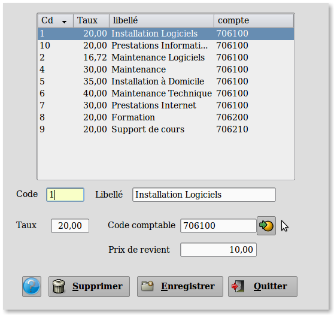

~ Comptabilité et Facturation Laurux ~

~ Comptabilité et Facturation Laurux ~ |
|
|
|
Gestion des taux de main d'oeuvre

A partir de cet écran vous pouvez céer, modifier
ou supprimer une fiche taux de mo.
Le code Mo se saisit sur
15 caractères maxi.
La libellé se saisit sur 25 caractères maxi.
Saisir le taux horaire .
Saisir le code comptable ou cliquer sur le bouton pour le
récuperer.
Saisir le prix de revient de l'heure de MO. Ce prix de revient
sera récupéré automatiquement lors de la création des MO par la table
des MO et servira pour le calcul de la marge MO en facturation.
----------------------------------------------------------------------------------------------------------------------